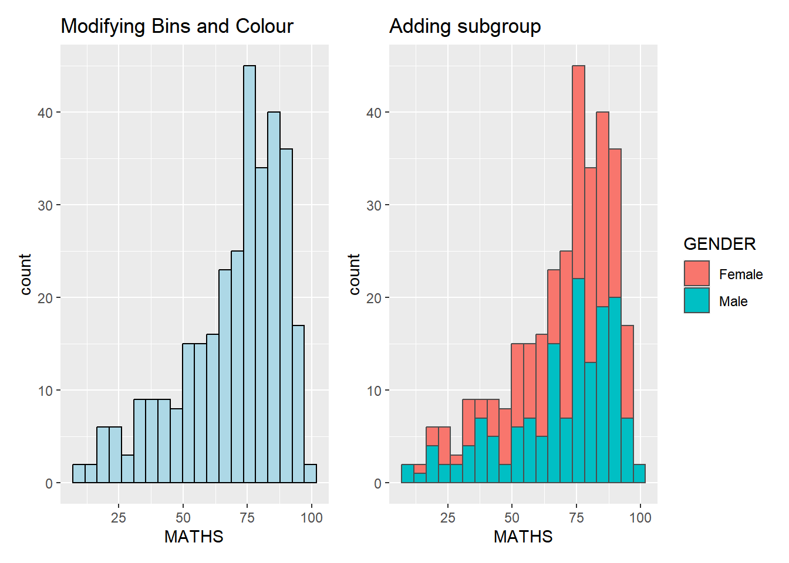
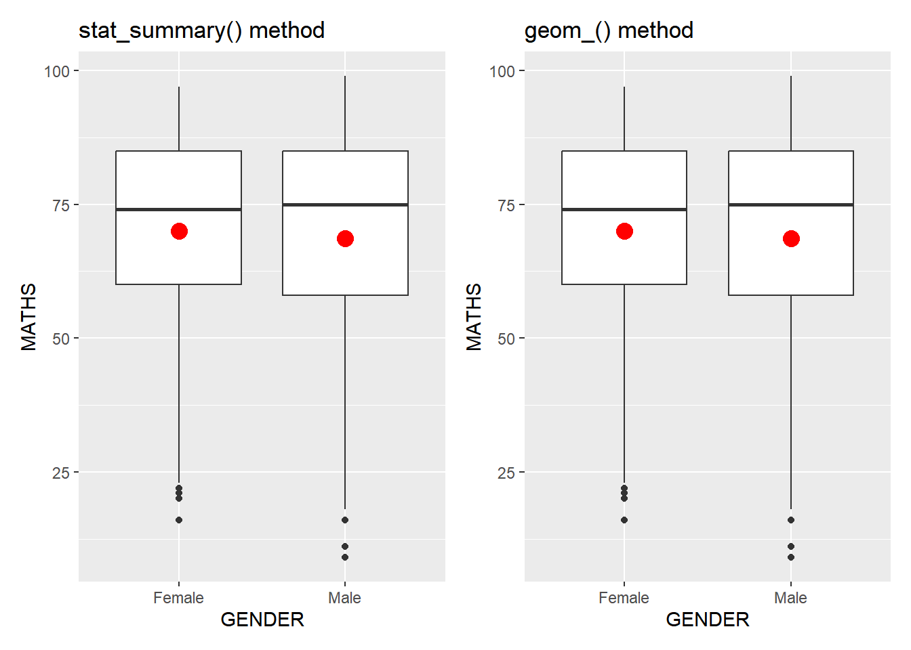

pacman::p_load(patchwork, tidyverse)Hands-on Exercise 1
Getting Started
Install and Launch R Packages
The code chunk below uses p_load() of pacman package to check if tidyverse these packages are installed in the computer. If they are, then they will be launched into R.
Importing the Data
For the purpose of this exercise, a data file called Exam_data will be used. It consists of year end examination grades of a cohort of primary 3 students from a local school. It is in csv file format.
exam_data <- read_csv("data/Exam_data.csv")Rows: 322 Columns: 7
── Column specification ────────────────────────────────────────────────────────
Delimiter: ","
chr (4): ID, CLASS, GENDER, RACE
dbl (3): ENGLISH, MATHS, SCIENCE
ℹ Use `spec()` to retrieve the full column specification for this data.
ℹ Specify the column types or set `show_col_types = FALSE` to quiet this message.Ploting Simple Graphs
A blank graph
ggplot(data=exam_data)Purpose of aes() function
ggplot(data=exam_data,
aes(x= MATHS))
All aesthetics of a plot are specified in the aes() function call and the code above adds MATHS to the x-axis.
Plotting a Bar Chart
ggplot(data=exam_data,
aes(x=RACE)) +
geom_bar()
Use #| eval: false to show code without plotting graph
ggplot(data=exam_data,
aes(x=RACE)) +
geom_bar()Use #| echo: false to plot graph without showing code

Plotting a Dot Graph
With y-axis vs without y-axis
d1 <- ggplot(data=exam_data,
aes(x = MATHS)) +
geom_dotplot(dotsize = 0.5)
d2 <- ggplot(data=exam_data,
aes(x = MATHS)) +
geom_dotplot(binwidth=2.5,
dotsize = 0.5) +
scale_y_continuous(NULL,
breaks = NULL)
d1 + d2Bin width defaults to 1/30 of the range of the data. Pick better value with
`binwidth`.
The y scale is not very useful, in fact it is very misleading.
Ploting a Histogram
Default vs Modifying Bins and Colour
h1 <- ggplot(data=exam_data,
aes(x = MATHS)) +
geom_histogram()
h2 <- ggplot(data=exam_data,
aes(x= MATHS)) +
geom_histogram(bins=20,
color="black",
fill="light blue")
h1 + h2`stat_bin()` using `bins = 30`. Pick better value with `binwidth`.
Fixing bin size fixes the gap and adding colour makes the plot more visually appealing.
Adding Gender Sub-group
ggplot(data=exam_data,
aes(x= MATHS,
fill = GENDER)) +
geom_histogram(bins=20,
color="grey30")
Using sub-groups allows for bivariate analysis.
Plotting a Kernal Density Estimate
Default vs Gender Sub-group
k1 <- ggplot(data=exam_data,
aes(x = MATHS)) +
geom_density()
k2 <- ggplot(data=exam_data,
aes(x = MATHS,
colour = GENDER)) +
geom_density()
k1 + k2
Plotting a Box Plot
Default vs Notched
b1 <- ggplot(data=exam_data,
aes(y = MATHS,
x= GENDER)) +
geom_boxplot()
b2 <- ggplot(data=exam_data,
aes(y = MATHS,
x= GENDER)) +
geom_boxplot(notch=TRUE)
b1 + b2
Notches are used in box plots to help visually assess whether the medians of distributions differ. If the notches do not overlap, this is evidence that the medians are different.
Plotting a Violin Plot
ggplot(data=exam_data,
aes(y = MATHS,
x= GENDER)) +
geom_violin()
Plotting a Scatterplot
ggplot(data=exam_data,
aes(x= MATHS,
y=ENGLISH)) +
geom_point() 
Plotting More Complex Plots
Plotting a Combined Boxplot and Scatterplot
ggplot(data=exam_data,
aes(y = MATHS,
x= GENDER)) +
geom_boxplot() +
geom_point(position="jitter",
size = 0.5) 
Adding Statistic Functions to Plots
Default
ggplot(data=exam_data,
aes(y = MATHS, x= GENDER)) +
geom_boxplot()
The boxplots below are incomplete because the positions of the means were not shown.
Using the stat_summary() method vs Using the geom() method
s1 <- ggplot(data=exam_data,
aes(y = MATHS, x= GENDER)) +
geom_boxplot() +
stat_summary(geom = "point",
fun = "mean",
colour ="red",
size=4)
s2 <- ggplot(data=exam_data,
aes(y = MATHS, x= GENDER)) +
geom_boxplot() +
geom_point(stat="summary",
fun="mean",
colour="red",
size=4)
s1 + s2
Both methods achieves the same result by adding a red marker to represent the mean.
Adding a best fit to a scatterplot
Default
ggplot(data=exam_data,
aes(x= MATHS, y=ENGLISH)) +
geom_point()
Best Fit Curve vs Best Fit Line
f1 <- ggplot(data=exam_data,
aes(x= MATHS, y=ENGLISH)) +
geom_point() +
geom_smooth(linewidth=0.5)
f2 <- ggplot(data=exam_data,
aes(x= MATHS,
y=ENGLISH)) +
geom_point() +
geom_smooth(method=lm,
linewidth=0.5)
f1 + f2`geom_smooth()` using method = 'loess' and formula = 'y ~ x'
`geom_smooth()` using formula = 'y ~ x'Generating Trellis Plots
Using facet_wrap()
ggplot(data=exam_data,
aes(x= MATHS)) +
geom_histogram(bins=20) +
facet_wrap(~ CLASS)
facet_wrap wraps a 1d sequence of panels into 2d. This is generally a better use of screen space than facet_grid because most displays are roughly rectangular.
Using facet_grid()
ggplot(data=exam_data,
aes(x= MATHS)) +
geom_histogram(bins=20) +
facet_grid(~ CLASS)facet_grid() forms a matrix of panels defined by row and column facetting variables. It is most useful when you have two discrete variables, and all combinations of the variables exist in the data.
Using Coordinates
Vertical vs Horizontal Bar Chart
b3 <- ggplot(data=exam_data,
aes(x=RACE)) +
geom_bar()
b4 <- ggplot(data=exam_data,
aes(x=RACE)) +
geom_bar() +
coord_flip()
b3 + b4
Changing the y- and x-axis range
Default vs Equal y- and x-axis range
r1 <- ggplot(data=exam_data,
aes(x= MATHS, y=ENGLISH)) +
geom_point() +
geom_smooth(method=lm, size=0.5)Warning: Using `size` aesthetic for lines was deprecated in ggplot2 3.4.0.
ℹ Please use `linewidth` instead.r2 <- ggplot(data=exam_data,
aes(x= MATHS, y=ENGLISH)) +
geom_point() +
geom_smooth(method=lm,
size=0.5) +
coord_cartesian(xlim=c(0,100),
ylim=c(0,100))
r1 + r2`geom_smooth()` using formula = 'y ~ x'
`geom_smooth()` using formula = 'y ~ x'
The default scatterplot on the left is slightly misleading because the y-aixs and x-axis range are not equal. The scatterplot on the right fixes both the y-axis and x-axis range to be from 0-100.
Using Themes
Themes can make the plots more visually appealing.
Default vs Grey Theme
t1 <- ggplot(data=exam_data,
aes(x=RACE)) +
geom_bar() +
coord_flip()
t2 <- ggplot(data=exam_data,
aes(x=RACE)) +
geom_bar() +
coord_flip() +
theme_gray()
t1 + t2Other Themes
t3 <- ggplot(data=exam_data,
aes(x=RACE)) +
geom_bar() +
coord_flip() +
theme_classic()
t4 <- ggplot(data=exam_data,
aes(x=RACE)) +
geom_bar() +
coord_flip() +
theme_minimal()
t3 + t4